Ứng dụng học sáo trúc thông minh cùng trợ lý AI — luyện cao độ, thổi sáo và nhận đánh giá tức thì.
Sổ tay người dùng
Phiên bản ứng dụng: 1.0.0
Nền tảng: iOS & Android
Cập nhật tài liệu: 17/06/2026
Mục lục
Giới thiệu về LenFolk
Bắt đầu: Đăng ký & Đăng nhập
Trang chủ
Bài học
Luyện tập cùng AI
Tiến độ & Thành tích
Hồ sơ & Cài đặt
Gói học & Xác thực tài khoản
Thông báo & Quyền riêng tư
Xử lý sự cố & Câu hỏi thường gặp
Liên hệ & Hỗ trợ
1. Giới thiệu về LenFolk
LenFolk là ứng dụng giúp bạn học và luyện sáo trúc mọi lúc, mọi nơi. Ứng dụng kết hợp bài học có âm thanh/video, lộ trình theo cấp độ và một trợ lý AI chấm điểm tiếng sáo bạn vừa thổi.
Bạn làm được gì với LenFolk?
Học theo bài
Bài học từ Nhập môn đến Nâng cao, có mục tiêu, lý thuyết và video minh hoạ.
Luyện cùng AI
Ghi âm tiếng sáo và nhận nhận xét về cao độ, độ ổn định, cách cải thiện.
Theo dõi tiến độ
Chuỗi ngày học (streak), hoạt động tuần, lịch sử luyện tập và huy hiệu.
Cá nhân hoá
Hồ sơ, mục tiêu hằng ngày, nhắc nhở và gói học phù hợp với bạn.
Cấu trúc điều hướng
Thanh điều hướng dưới cùng có 5 mục chính, luôn có thể truy cập từ mọi màn hình:
Mục
Tên
Chức năng
Trang chủ
Tổng quan
Lời chào, chuỗi học, bài học gần nhất, lối tắt luyện tập tự do.
Bài học
Thư viện
Duyệt và lọc bài học theo cấp độ.
Luyện tập
Trung tâm luyện
Luyện nốt ngẫu nhiên hoặc luyện theo bài học.
Tiến độ
Thống kê
XP, hoạt động tuần, huy hiệu, lịch sử luyện tập.
Hồ sơ
Cá nhân
Thông tin tài khoản, cài đặt, gói học, đăng xuất.
Mẹo: Biểu tượng chuông ở góc trên bên phải hầu hết các màn hình sẽ mở Thông báo.
2. Bắt đầu: Đăng ký & Đăng nhập
Lần đầu mở ứng dụng, bạn sẽ thấy màn hình giới thiệu. Có thể nhấn Bỏ qua để vào nhanh phần đăng nhập.
1Màn hình chào khi mở ứng dụng
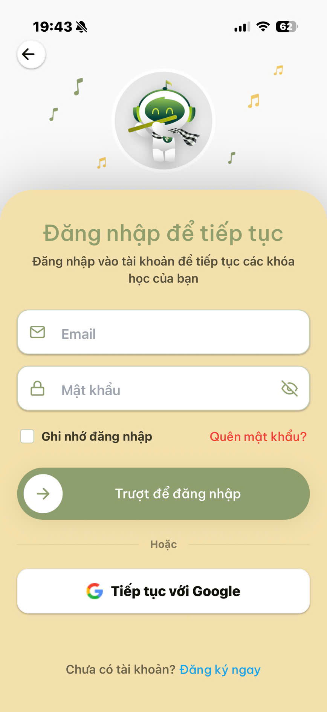
2Đăng nhập bằng email & mật khẩu
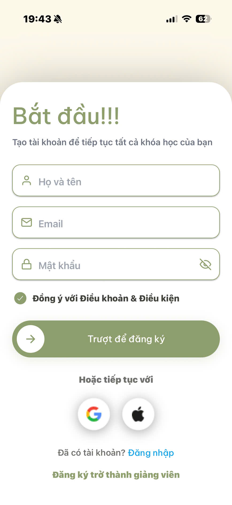
3Đăng ký tài khoản mới
2.1. Tạo tài khoản mới
Từ màn hình chào, nhấn Đăng ký.
Nhập Họ và tên, Email và Mật khẩu (tối thiểu 8 ký tự). Nhấn biểu tượng con mắt để hiện/ẩn mật khẩu.
Tích chọn Đồng ý với Điều khoản & Điều kiện.
Trượt để đăng ký để hoàn tất.
Trở thành giảng viên? Ở cuối màn hình đăng ký có mục Đăng ký trở thành giảng viên. Hồ sơ sẽ được quản trị viên xét duyệt trước khi đăng nhập.
2.2. Đăng nhập
Nhập Email và Mật khẩu.
Có thể bật Ghi nhớ đăng nhập để lần sau vào nhanh hơn.
Trượt để đăng nhập.
Đăng nhập bằng Google / Apple đang được phát triển và sẽ sớm có mặt.
2.3. Quên mật khẩu
Tại màn hình đăng nhập, nhấn Quên mật khẩu?
Chọn phương thức Email và nhập email của bạn, nhấn Gửi mã.
Nhập mã OTP 6 số được gửi tới email. Có thể Gửi lại mã khi hết thời gian đếm ngược.
Nhấn Xác minh, sau đó đặt mật khẩu mới.
3. Trang chủ
Trang chủ là bảng điều khiển nhanh: lời chào, tình trạng học tập và các lối tắt quan trọng.
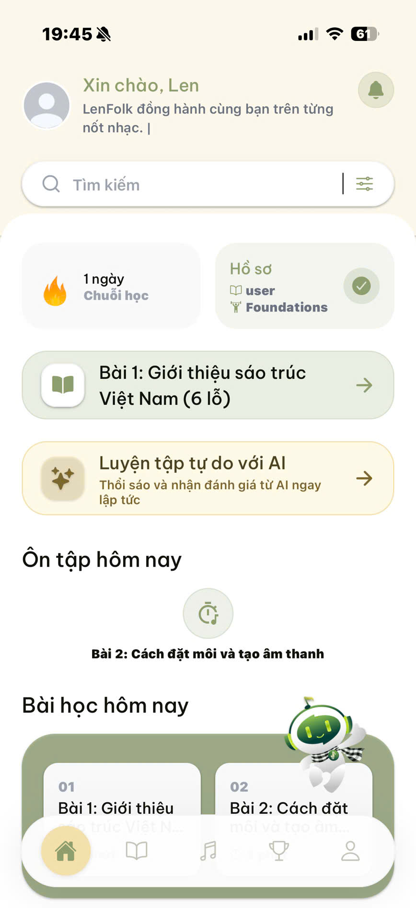
4Lời chào, tìm kiếm, chuỗi học & luyện tập tự do
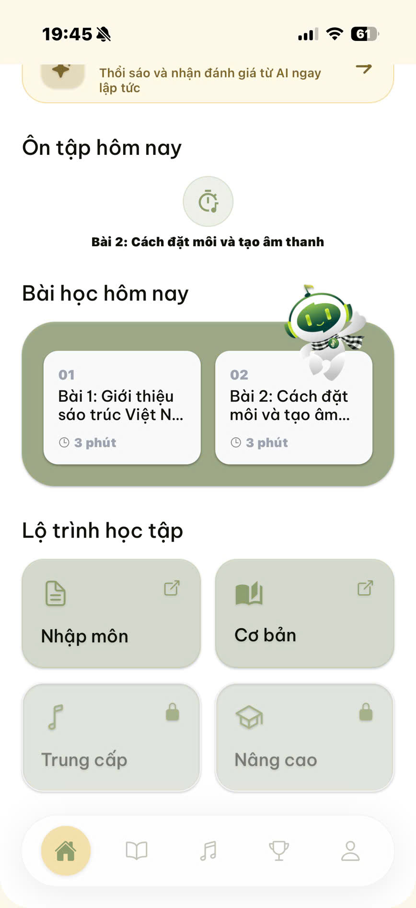
5Ôn tập hôm nay, bài học & lộ trình học tập
Các thành phần chính
Lời chào cá nhân kèm ảnh đại diện; huy hiệu vương miện nếu bạn là thành viên Premium.
Thanh tìm kiếm: tìm bài học theo tên hoặc danh mục.
Thẻ chuỗi học (streak): số ngày học liên tiếp, có hiệu ứng ngọn lửa.
Tiếp tục bài học: mở nhanh bài học bạn xem gần nhất.
Luyện tập tự do với AI: thổi sáo và nhận đánh giá ngay, không cần chọn bài.
Ôn tập hôm nay & Bài học hôm nay: lối tắt tới các bài gợi ý.
Lộ trình học tập: 4 cấp độ — Nhập môn, Cơ bản, Trung cấp, Nâng cao (một số cấp có thể bị khoá).
Tự động ghi nhận streak: Mỗi ngày bạn mở ứng dụng, hệ thống tự cập nhật chuỗi ngày học. Hãy ghé vào mỗi ngày để giữ chuỗi không bị đứt!
4. Bài học
Mục Bài học là thư viện toàn bộ nội dung, sắp xếp theo cấp độ.
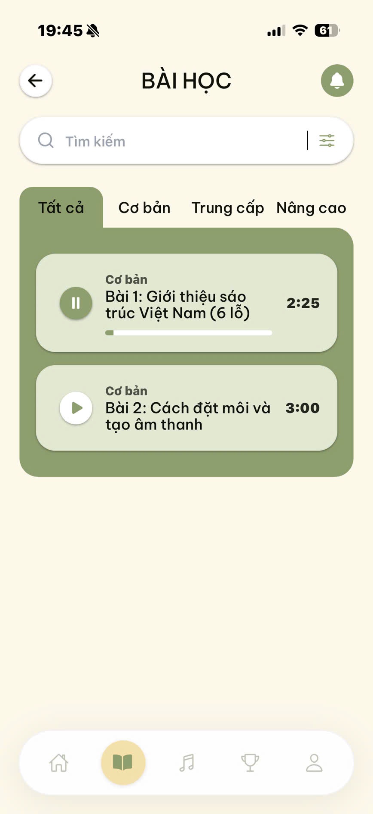
6Danh sách bài học & lọc theo cấp độ
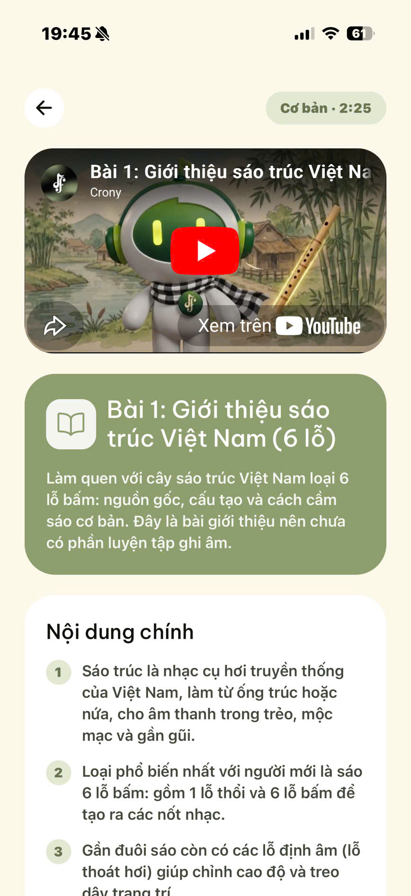
7Chi tiết Bài 1 — Giới thiệu sáo trúc (6 lỗ)
4.1. Duyệt & tìm bài học
Dùng thanh tìm kiếm theo tên hoặc danh mục.
Chọn tab cấp độ: Tất cảCơ bảnTrung cấpNâng cao
Mỗi bài hiển thị trạng thái (Chưa học / Đang học / Hoàn thành), tên, danh mục, thanh tiến độ và thời lượng.
Nhấn giữ một bài để xem nhanh thông tin và mở bài học.
4.2. Màn hình chi tiết bài học
Khi mở một bài học, bạn sẽ thấy:
Mục tiêu và Nội dung chính (các ý chính cần nắm).
Video / âm thanh minh hoạ (nếu có) với điều khiển phát, tạm dừng, toàn màn hình.
Bài tập thực hành hoặc — với bài giới thiệu như Bài 1 — phần ghi chú thay cho luyện tập.
Nút Đánh dấu đã hoàn thành và nút Bài tiếp theo ở cuối màn hình.
Bài 1 là bài giới thiệu về sáo trúc Việt Nam (6 lỗ) nên không có phần ghi âm luyện tập — bạn chỉ cần đọc, đánh dấu hoàn thành rồi chuyển sang bài tiếp theo. Ứng dụng tự lưu tiến độ khi bạn mở bài.
5. Luyện tập cùng AI
Đây là tính năng cốt lõi: bạn ghi âm tiếng sáo, ứng dụng gửi cho AI và trả về nhận xét bằng tiếng Việt.
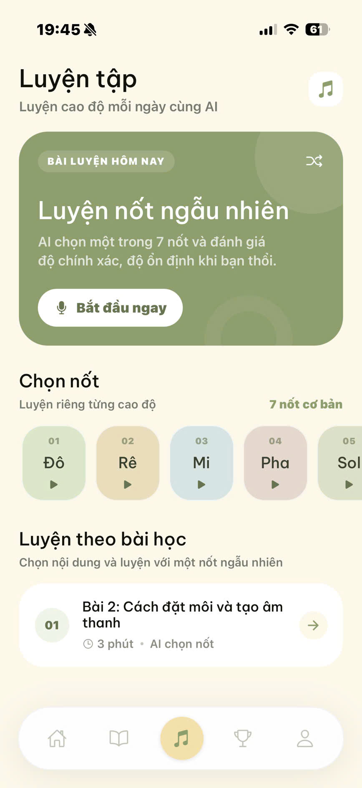
8Trung tâm luyện tập: luyện nốt & theo bài học
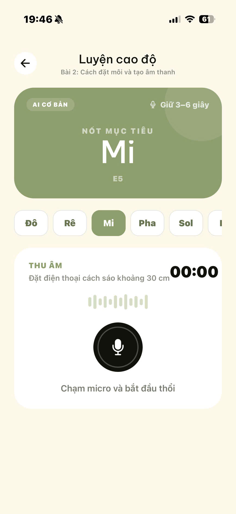
9Ghi âm tiếng sáo & nhận phân tích từ AI
5.1. Hai chế độ luyện tập
Chế độ
Mục tiêu
Phù hợp khi
Luyện nốt
Thổi đúng một nốt (Đô, Rê, Mi…); AI chấm cao độ & độ ổn định.
Luyện tai và độ chính xác từng nốt.
Luyện theo bài học
Luyện nội dung của một bài cụ thể.
Học bài bản theo lộ trình.
5.2. Bài 2 — Cách đặt môi & thổi ra tiếng sáo
Bài học này có chế độ riêng “Luyện thổi sáo”:
Phần Hình mẫu thực hành hiển thị 3 ảnh hướng dẫn đặt môi, cầm sáo và hướng hơi. Nhấn vào ảnh để xem toàn màn hình (vuốt xuống hoặc nhấn ✕ để đóng).
Mục tiêu là tạo được “âm sáo rõ” — không chỉ toàn tiếng gió.
AI sẽ đánh giá bạn đã ra tiếng sáo rõ chưa và gợi ý về khẩu hình, hướng hơi.
5.3. Quy trình ghi âm & phân tích
Mở một phiên luyện tập (từ Trang chủ, mục Luyện tập, hoặc một bài học).
Lần đầu, cấp quyền truy cập micro khi được hỏi.
Đặt điện thoại cách sáo khoảng 30 cm. Nhấn nút micro và thổi, giữ khoảng 3–6 giây.
Nhấn Dừng. Bản ghi xuất hiện trong danh sách “File đã ghi âm” — nhấn để nghe lại.
Nhấn Phân tích với AI và chờ kết quả.
Xem bảng kết quả: điểm số, nhận xét, các lỗi và gợi ý cải thiện. Nhấn Thử nốt khác / Thử lại để luyện tiếp.
5.4. Tên nốt tiếng Việt
Ứng dụng dùng tên nốt tiếng Việt; AI cũng nhận xét bằng tên tiếng Việt thay vì ký hiệu nhạc lý.
Ký hiệu
C
D
E
F
G
A
B
Tên Việt
Đô
Rê
Mi
Pha
Sol
La
Si
5.5. AI cơ bản vs AI nâng cao
Tiêu chí
AI cơ bản (miễn phí)
AI nâng cao (Premium)
Điểm số
Có (thang 100)
Có (thang 100)
Nhận xét
Ngắn gọn
Chi tiết theo từng khía cạnh
Liệt kê lỗi & gợi ý
Hạn chế
Đầy đủ, cá nhân hoá
Gợi ý chất lượng ghi âm: luyện ở nơi yên tĩnh, tránh gió mạnh và tạp âm; giữ khoảng cách micro ổn định để AI đánh giá chính xác hơn.
6. Tiến độ & Thành tích
Mục Tiến độ tổng hợp thống kê học tập cá nhân của bạn.
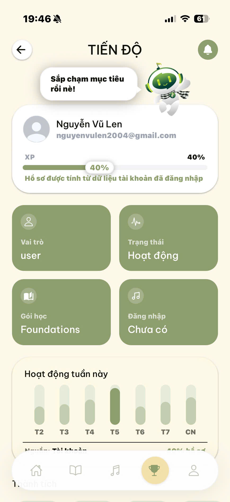
10Hồ sơ, XP, hoạt động tuần, huy hiệu & lịch sử luyện tập
Thẻ hồ sơ: ảnh đại diện, tên, email, huy hiệu Premium.
Thanh XP / hoàn thiện hồ sơ (0–100%) dựa trên 5 trường: tên, email, ảnh đại diện, số điện thoại, ngày sinh.
Lưới thống kê: Vai trò, Trạng thái tài khoản, Gói học, Lần đăng nhập gần nhất.
Hoạt động tuần này: biểu đồ cột theo 7 ngày (T2–CN), ngày hiện tại được tô đậm.
Huy hiệu: xác thực email, ảnh đại diện, số điện thoại, ngày sinh.
Lịch sử luyện tập: các phiên đã thực hiện kèm điểm/trạng thái.
Tăng % hồ sơ: Hoàn thiện đủ 5 trường thông tin trong phần Chỉnh sửa hồ sơ để đạt 100%.
7. Hồ sơ & Cài đặt
Mục Hồ sơ để quản lý tài khoản, tuỳ chọn học tập và đăng xuất.
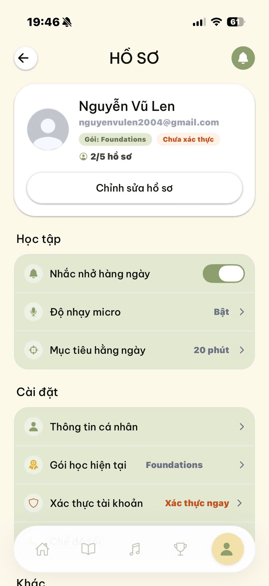
11Hồ sơ: tài khoản, tuỳ chọn học tập & cài đặt
7.1. Thẻ tài khoản
Hiển thị ảnh đại diện, tên, email, gói học và trạng thái xác thực.
Cho biết mức độ hoàn thiện hồ sơ dạng X/5.
Nút Chỉnh sửa hồ sơ để cập nhật thông tin.
7.2. Chỉnh sửa hồ sơ
Nhấn Thay đổi ảnh để chọn ảnh đại diện mới (cấp quyền thư viện ảnh khi được hỏi, cắt theo tỉ lệ 1:1).
Cập nhật Họ tên, Email, Số điện thoại, Ngày sinh, Giới tính.
Nhấn Lưu thay đổi.
7.3. Tuỳ chọn học tập & cài đặt
Nhắc nhở hàng ngày: bật/tắt thông báo nhắc luyện tập.
Độ nhạy micro và Mục tiêu hằng ngày (ví dụ 20 phút).
Lối tắt tới Gói học hiện tại, Xác thực tài khoản, Chính sách bảo mật.
Đăng xuất ở cuối màn hình.
8. Gói học & Xác thực tài khoản
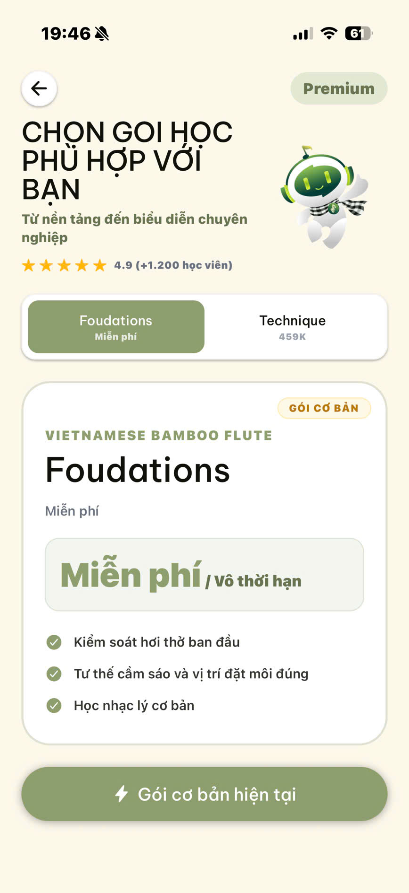
12Xem & đăng ký gói học (thanh toán qua QR)
8.1. Gói học
Trong Gói học, bạn xem và mua các gói:
Chuyển giữa các tab gói (ví dụ Nền tảng miễn phí và Kỹ thuật trả phí).
Mỗi gói có giá, chu kỳ, điểm nổi bật và danh sách tính năng.
Gói đang dùng hiển thị Đã đăng ký; gói khác có nút Mua ngay.
Nhấn Mua ngay để mở cửa sổ thanh toán kèm mã QR.
Quét QR và thanh toán; ứng dụng tự kiểm tra trạng thái giao dịch.
Khi thành công, quyền lợi Premium được kích hoạt (huy hiệu vương miện xuất hiện).
Premium mở khoá: AI nâng cao và các nội dung/đặc quyền của gói tương ứng.
8.2. Xác thực tài khoản (email)
Vào Hồ sơ → Xác thực tài khoản.
Nhấn Gửi mã xác thực; mã OTP 6 số được gửi tới email của bạn.
Nhập mã và nhấn Xác thực. Có thể Gửi lại mã khi hết đếm ngược.
9. Thông báo & Quyền riêng tư
9.1. Trung tâm thông báo
Mở bằng biểu tượng chuông ở góc trên. Tại đây bạn xem cập nhật về bài học, huy hiệu, giao dịch, streak, kiểm duyệt và hệ thống.
Thông báo chưa đọc có chấm đỏ và nền nổi bật.
Nhấn một thông báo để đánh dấu đã đọc và mở màn hình liên quan.
Nhấn nút làm mới để tải lại danh sách.
9.2. Quyền riêng tư
Mục Chính sách bảo mật (Hồ sơ → Chính sách bảo mật) nêu rõ:
Dữ liệu thu thập: thông tin tài khoản, tiến độ học, lịch sử luyện tập, dữ liệu âm thanh khi phân tích AI.
Âm thanh luyện tập: chỉ truy cập micro khi bạn cấp quyền và bắt đầu luyện; không dùng cho quảng cáo.
Quyền của bạn: cập nhật thông tin, thu hồi quyền micro, yêu cầu xem/sửa/xoá dữ liệu tài khoản.
10. Xử lý sự cố & Câu hỏi thường gặp
Tình huống
Cách xử lý
Không ghi âm được / không thấy file
Kiểm tra đã cấp quyền micro (Cài đặt hệ thống → LenFolk → Micro). Đóng các ứng dụng đang dùng micro (cuộc gọi, nhạc) rồi thử lại. Giữ nút ghi 3–6 giây.
Nghe lại bản ghi không có tiếng
Tăng âm lượng thiết bị, tắt chế độ im lặng. Ghi lại ở nơi yên tĩnh và giữ micro gần sáo hơn.
AI phân tích lỗi / không trả kết quả
Kiểm tra kết nối mạng và thử Phân tích lại. Bản ghi quá ngắn hoặc quá nhỏ tiếng có thể khiến AI không đánh giá được.
Không nhận được mã OTP
Kiểm tra hộp thư rác/spam, đợi hết đếm ngược rồi nhấn Gửi lại mã. Đảm bảo nhập đúng email.
Quên mật khẩu
Dùng Quên mật khẩu? tại màn hình đăng nhập để nhận mã OTP và đặt lại mật khẩu.
Chuỗi học (streak) bị mất
Streak được tính khi bạn mở ứng dụng mỗi ngày. Hãy ghé vào hằng ngày để duy trì.
Một số cấp độ bị khoá
Các cấp Trung cấp/Nâng cao có thể yêu cầu hoàn thành cấp trước hoặc nâng cấp gói học.
Mẹo để học hiệu quả
Luyện mỗi ngày một chút để giữ streak và tạo thói quen.
Bắt đầu từ Bài 1–2 để nắm tổng quan, cách đặt môi và tạo tiếng sáo rõ.
Dùng Luyện nốt để rèn cao độ từng nốt trước khi ghép bài.
Hoàn thiện hồ sơ và xác thực email để mở đầy đủ tính năng.
11. Liên hệ & Hỗ trợ
Cần hỗ trợ, báo lỗi hay góp ý cho LenFolk? Hãy liên hệ với chúng tôi qua các kênh dưới đây — đội ngũ luôn sẵn sàng đồng hành cùng bạn.
Kết nối với LenFolk
Email:crony1705@gmail.com
Mã QR: Quét mã bên cạnh để liên hệ nhanh với đội ngũ hỗ trợ.
Khi gửi yêu cầu hỗ trợ, vui lòng mô tả ngắn gọn vấn đề và (nếu có) ảnh chụp màn hình để chúng tôi xử lý nhanh hơn.
Mẹo: Trước khi liên hệ, bạn có thể xem nhanh Chương 10 — Xử lý sự cố; phần lớn vấn đề thường gặp (micro, âm thanh, OTP…) đã có hướng dẫn khắc phục tại đó.